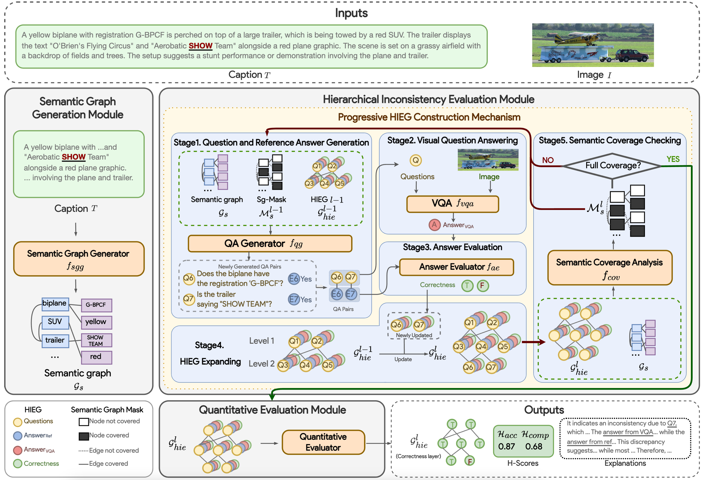

|
Hongbao Zhang | 张洪宝
Currently,I am a second year M.S student at
The Chinese University of Hong Kong (Shenzhen),
supervised by
Prof. Baoyuan Wu.
Besides, during my first year, I worked with
Prof. Rui Shen. in LLM powered Accounting Research.
and Prof. Ka Wai Tsang. in Biostatistics.
Prior to that, I obtained B.A. in Economics from
Xiamen University.
I finished my undergraduate thesis in quantitative finance under the guidance of
Prof. Haiqiang Chen.
Through these diverse research experiences, I discovered my passion for AI research, solidifying my commitment to making it my lifelong pursuit..
Research Interests: Data-centric AI, Trustworthy ML, Multimodal Large Language Models.
I hope to make AI a good companion to everyone.
Email (CUHKSZ) /
Google Scholar /
Github
|
|
Research
|
|

|
HMGIE: Hierarchical and Multi-Grained Inconsistency Evaluation for Vision-Language Data Cleansing
Zihao Zhu, Hongbao Zhang, Guanzong Wu, Siwei Lyu, Baoyuan Wu
arXiv Paper
Visual-textual inconsistency (VTI) evaluation is critical for cleansing vision-language data.
This paper introduces HMGIE, a hierarchical framework to evaluate and address inconsistencies
in image-caption pairs across accuracy and completeness dimensions.
Extensive experiments validate its effectiveness on multiple datasets, including the newly constructed MVTID dataset.
|
Miscs
-
Football I am a football fan and have played in school teams for 13 years.
I have won at least 9 championships and various awards. Always enjoy myself playing with teammates!
|
This website template was borrower from Jonathon Barron.
Last updated on Dec, 2024.
|
|
{kind=link}